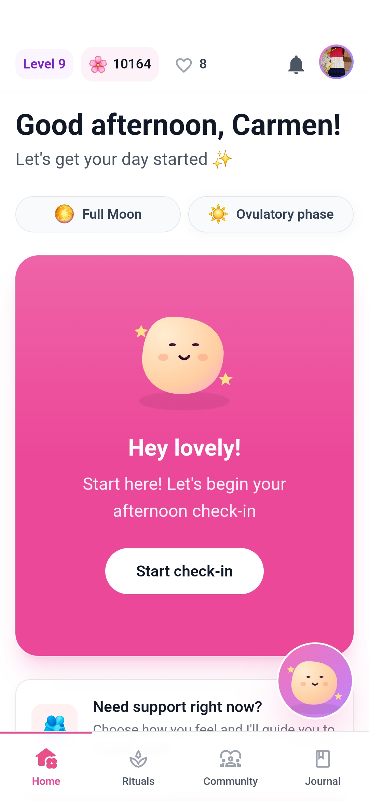
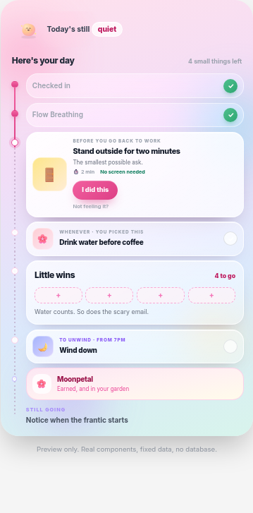
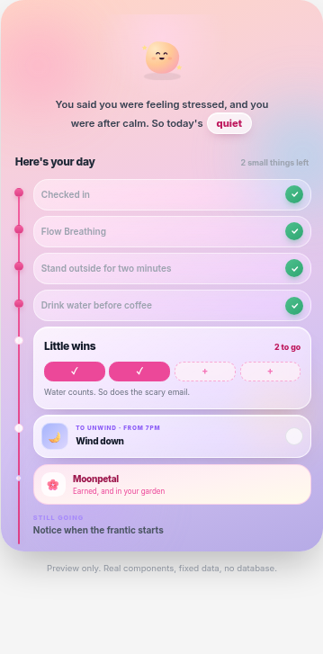

HerFreedom101 attracted an initial group of users, but many did not continue checking in after onboarding. The first experience introduced several features, yet it did not establish what users should return for or show how one visit would improve the next.
After completing a check-in, users returned to a dashboard of separate features and had to decide what to do next. The streak system encouraged daily attendance, but it measured consistency rather than whether the experience was useful. A user could return simply to protect her streak. For a product intended to support recovery, this risked turning self-care into another obligation to maintain.
How could HerFreedom101 turn the check-in into a useful daily experience and give users a meaningful reason to return?
The process
I began with informal discovery conversations with four women who had experienced burnout and reviewed discussions in online communities. Their experiences shaped the first Android MVP, which brought together emotional check-ins, personalised rituals, cycle-aware guidance, reflection, community, and Chi, a conversational wellbeing guide.
I launched the MVP to learn from real use, inviting the original participants and women from relevant self-care communities to try it. Thirteen early users formed the product audit. Because the group was small, I treated their behaviour as directional evidence rather than proof of retention. I looked at what happened after onboarding, which features were used and whether check-ins led to continued engagement. I also used the app consistently myself, which exposed how the streak could motivate a return without making the experience more useful.
Together, these findings showed that the problem was not a lack of features or reminders. The MVP had no clear daily loop: completing a check-in gave users a result, but it did not recommend what to do next. Instead, users were sent back to a dashboard where they had to choose between rituals, reflection, Chi, and the app's other features. I used that insight to refocus the product around one adaptive journey in which each check-in shapes what happens next.
The solution
I brought the separate features into one daily journey. The check-in no longer ends with a result and leaves the user to choose what to do next. Her answers are used to create a specific plan for that day, bringing the most relevant activity into one place. As she completes each action, the journey updates to show what she has done and what she can do next.
Before · Feature dashboard

The check-in was one destination among several, leaving users to decide where to go next.After · Adaptive daily journey
The check-in now creates a relevant sequence of actions and a clear next step.
I also replaced the daily streak with progress that only moves forward. If a user returns after several days away, she continues from where she stopped. Chi, the app's conversational wellbeing guide, can refer back to details and reflections the user has shared. Chapters then collect completed days and patterns noticed over time into a longer-term view of her progress.
01
Adapt
The check-in creates a plan that matches what she can manage that day.
02
Remember
Chi uses what she has shared to make later guidance more relevant.
03
Keep progress
She continues from where she stopped, even after time away.
The outcome
The redesign turned HerFreedom101 from a collection of separate wellness features into one connected product system. Check-ins now decide which support appears next, completed activities inform later guidance and progress is kept when the user takes time away. This gives every feature a clearer role in helping the user return instead of asking her to navigate the same menu on every visit.
SHIPPED, NOW BEING VALIDATED
The connected journey is live. The early user group is still too small to claim a retention improvement, so the next test is whether this stronger continuity gives more women a meaningful reason to return.
What I learned
I’ll never mistake a warm collection of features for a coherent product loop. The first MVP asked depleted users to choose among rituals, reflection, Chi and other tools, then rewarded them for protecting a streak rather than getting value. I also will not turn thirteen users into a retention claim: they exposed the broken loop, but they did not prove the redesign fixed it.
How I designed and evolved an adaptive wellness product for women experiencing burnout, creating a model of progress that responds to changing capacity without relying on pressure or punishment.
Role
Founder and Product Designer
Team
Solo founderResearch participantsEarly users
Scope
Strategy, research, systems, UX, build and launch
Timeline
2025–2026 · Shipped and in early validation
A wellness product should not become another demand
HerFreedom101 began with a gap I noticed while recovering from burnout. I could not find a product that felt specifically designed around women's experiences of burnout and recovery. Broader wellness apps such as Headspace and Quabble offered large catalogues of activities, which still left me deciding what to choose when I had very little energy. Finch made self-care feel more approachable, but its playful style felt too young for the kind of support I wanted.
This revealed the contradiction I wanted to solve: the products available to me still required choice, motivation or consistency at the point when those resources were hardest to access. Exploratory conversations and naturally occurring discussions about burnout, self-care and habit-building then helped me test whether that frustration extended beyond my own experience. They repeatedly surfaced decision fatigue, generic guidance, pressure to remain consistent and progress that was easily broken.
How could HerFreedom101 turn the check-in into a useful daily experience and give users a meaningful reason to return?
I led product strategy, discovery, information architecture, interaction design, UX writing, prototyping, full-stack implementation, monetisation, safety, launch and post-launch product analysis.
The process
Step #1: Turning lived experience into a product question
My experience provided a strong starting point, but it did not give me permission to assume every woman experienced burnout in the same way. I separated my personal frustration from the broader behaviour I needed to investigate.
INITIAL OBSERVATIONPeople want to care for themselves
The desire is present, but the energy required to sustain a routine may not be.
→
REFRAMED PROBLEMCapacity is the design constraint
The product must work before motivation, consistency and decision-making return.
Step #2: Listening beyond my own experience
I held informal discovery conversations with four women from my family and friendship network who had experienced burnout or prolonged periods of low capacity. I asked what they had tried, what made self-care harder on low-energy days, why routines stopped and what made support feel genuinely useful. I also reviewed naturally occurring discussions in relevant online communities.
This was directional research, not a representative study. Across the conversations, however, the same problems appeared repeatedly: too many choices when energy was low, guilt after missing a routine, advice that felt generic and initial novelty that did not create a lasting reason to return.
Participant names have been changed for confidentiality. The notes below are a synthesis, not direct quotations.
ParticipantWhat made support harderWhat she neededDesign direction
LaylaToo many activities to choose from when already depletedA clear place to beginOne recommended daily journey
FranMissing several days made a routine feel brokenPermission to return without starting againProgress that survives absence
AmeliaGeneral advice did not reflect how she felt that daySupport matched to her current capacityUse the check-in to shape the day
KimNew features were interesting briefly but did not build continuityA reason for one visit to matter to the nextMemory across interactions
KEY MOVE
The opportunity was not to add more exercises. It was to reduce the number of choices, adjust support to the user's capacity and make progress continue after time away.
Step #3: Defining the product hypothesis
What if personal growth could meet a woman at her current capacity instead of asking her to perform an ideal routine?
01
Reduce effort
The product should not require motivation before it can help.
02
Respond to capacity
A difficult day should produce a different experience from an energetic one.
03
Preserve progress
Participation should survive missed days and changing circumstances.
Check-in → adaptive day → small actions → reflection → memory → growth
Step #4: Building, launching and recruiting early users
I designed and developed the first version myself using Claude Code as part of an AI-assisted, vibe-coding workflow. I moved between product design and implementation, worked through technical constraints as they appeared, deployed the backend and application services on Google Cloud Platform, and prepared the app for release through Google Play.
I launched on Android first so I could test the product with a smaller group, learn from real use and validate the direction before investing in an iOS release. I shared the Android app with the four women involved in discovery and in relevant women's self-care communities on Reddit, inviting people to try the experience rather than respond only to a prototype.
The first release included emotional check-ins, personalised rituals, cycle-aware guidance, letters, reflection, community, gamification, subscriptions and Chi, the app's conversational wellbeing guide. Building the full product proved the idea could be shipped, but it also exposed a contradiction: an app for women experiencing decision fatigue had become another menu of features to navigate.
Scroll inside the phone to exploreThe shipped Android version combined check-ins, progress counters and several feature destinations on one home screen.
Step #5: Confronting what the evidence showed
The early group was small, so I treated the usage data as an indication of where to investigate further, not as proof of retention. Thirteen early users formed the product audit. Cycle Sync had the clearest secondary-feature signal, while seven of 72 rituals accounted for every recorded completion. Eleven letters had been sent, and community activity showed celebration without sustained discussion.
Using the product myself revealed another problem. I maintained a 26-day streak and even spent in-product currency to protect it, but I had stopped using the app for its actual wellbeing support. I was returning to preserve the number, not because the experience was helping me. The streak could motivate a visit, but for the wrong reason: it turned self-care into another obligation and made losing progress feel more important than gaining value.
KEY MOVE
I stopped treating more reminders, rewards or activities as the answer. The redesign needed to make the existing features work together: use today's check-in to offer relevant support, carry useful information into the next visit and let progress continue without demanding daily attendance.
Step #6: Redefining what progress meant
I removed the rule that progress depended on opening the app every day. A user now advances by completing a day in her personal journey. If she takes a week away, she returns to the same point and continues. Her previous effort is not erased and there is no broken streak to repair.
DAILY STREAKReturn every calendar day
Missing a day breaks the sequence and can make self-care feel like another obligation.
→
PERSONAL PROGRESSContinue when you are ready
Time away changes nothing. The next completed day moves the journey forward.
The path waits. She does not fall behind.
System rule: shared community activity can still follow calendar dates, but personal progress only moves when the user participates.
Step #7: Giving users a reason to return beyond a streak
Removing the daily streak solved the pressure problem, but it created a more important design question: if users were no longer returning to protect a number, what would make opening the app useful today?
In the first version, the check-in produced a result and then returned the user to a dashboard of features. She still had to decide whether to choose a ritual, write a reflection, speak to Chi or do nothing. I redesigned the check-in as the starting point for the whole day. The user shares how she feels, how much energy she has and what she wants support with. If she has enabled cycle tracking, that context and her recent activity can also inform the response.
The app then brings a small, relevant sequence into one place instead of asking her to browse the full product. A low-energy day might begin with a gentler action, while a day with more capacity can offer something more involved. As she completes an activity, the daily view updates so she can see what she has done and what is available next.
The check-in leads into a specific plan for the day, removing the need to choose between every feature.
The day begins with a manageable action.

Completed actions remain visible as the day develops.

An evening reflection closes the day and creates context for the next visit.
Step #8: Making one day improve the next
A relevant plan for today was only part of the answer. If every check-in began from zero, the experience would still feel generic and the user would keep giving information without seeing why it mattered.
I drew inspiration from Google Health experiences that turn personal metrics into timely insights throughout the day. What made those interactions useful was not simply that data had been collected. The product returned it as guidance that made me feel recognised and helped me understand what to do next.
I applied that principle to Chi, HerFreedom101's conversational wellbeing guide. Chi can remember details from the user's life, refer back to what she shared previously, connect an evening reflection to the following morning and explain why particular support has been suggested. This made Chi the visible, human-facing part of the personalisation system rather than a separate chat feature.
Personalisation becomes valuable when information is returned as recognition, not simply collected as data.
DESIGN PRINCIPLE
If the product asks the user to share something personal, that information should improve the support she receives later. Otherwise, the question creates effort without returning value.
Step #9: Supporting recovery beyond the hardest days
Once the product could adapt from one day to the next, I needed to consider what happened as the user's capacity changed over a longer period. The first version was mainly designed for someone who felt depleted. If the product continued speaking to her only as a person in burnout, it would become less relevant as she recovered.
I created three internal stages: depleted, reconnecting and rebuilding. These are not labels shown to the user. They help the system adjust the kind of support it offers, from reducing effort during depleted periods to encouraging more active growth as capacity returns.
Chapters make that longer-term change visible without turning it into another streak. Each Chapter brings together its focus, the days completed and patterns Chi has noticed, giving the user a record of how her needs and capacity are changing. This allows HerFreedom101 to support the person she is becoming, not keep defining her by the reason she first arrived.
Scroll inside the phone to exploreChapters turn completed days and noticed patterns into a longer-term story of recovery and growth.
Step #10: Refocusing the product around meaningful return
The original product had grown broad because each idea was considered separately. The new model gave me a clearer way to decide what belonged: every feature needed to help the experience adapt to the user, remember something useful or show progress without pressure.
I audited each major feature against the question, “Does this strengthen a meaningful reason to return?” The answer determined whether the feature should be protected, connected to the daily journey, simplified or paused.
ProtectCycle Sync
Keep the strongest secondary-feature signal and use it as context for relevant support.
ConnectCheck-ins, rituals, reflection and memory
Make them stages of one daily journey instead of separate destinations.
ConsolidateSelf-knowledge into Chapters
Return what the system has learned as one coherent view over time.
SimplifyChi entry points
Make Chi part of the journey instead of asking users to understand separate chat modes.
PauseCommunity expansion
Do not invest further while the early audience is too small to sustain discussion.
DemoteStreaks
Allow them to acknowledge participation, but not define whether progress has been kept or lost.
I stopped asking, “What else could I design?” and began asking, “What has earned the right to remain?”
This closed the loop with the original problem. Instead of offering more features for a depleted user to choose between, the product could now decide what to bring forward, remember why it mattered and help her continue when she was ready.
Outcome
HerFreedom101 now has a clearer product model: check-ins have consequences, days connect, progress survives absence, memory becomes useful, Chapters support growth and the roadmap is judged by its contribution to a meaningful return.
VALIDATION STATUS
The redesigned system has shipped, but the cohort remains too small to claim a validated retention improvement. The next question is precise: does being remembered, and seeing progress accumulate without punishment, give women a stronger reason to return?
From design to shipped product
DELIVERY
HerFreedom101 was not only designed in a design file. I used AI-assisted, vibe-coding workflows to build, test and ship the product, moving between product decisions, interface details and implementation constraints. Because the experience handles personal wellbeing information, I also treated privacy, security and safe data handling as product requirements while deciding what was feasible to release. The goal was always a working product that could reach users.
What I learned
Warmth was not enough
Tone alone could not solve the deeper problem. The experience needed to remember what users shared, adapt to changing capacity and make progress visible without turning absence into failure.
The project strengthened how I approach ambiguous product challenges: distinguishing feature value from system coherence, combining limited behavioural evidence with qualitative insight, challenging my assumptions and reducing scope when more functionality would not strengthen the core experience.
Designing for vulnerable moments does not mean removing ambition. It means creating a system that can support progress when the user has limited capacity to carry it herself.